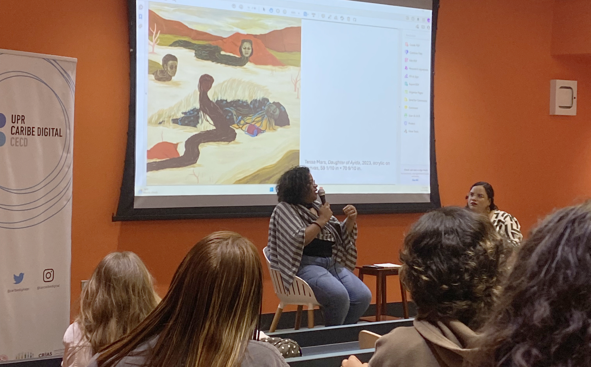
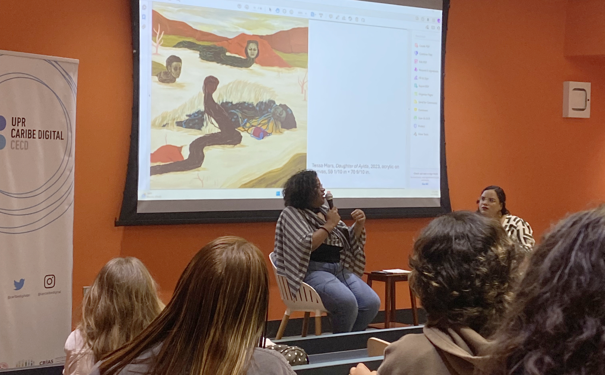

"What is really a border? It represents nothing. So, you should go absolutely wherever you need to be."

Tessa Mars is a Haitian visual artist whose work focuses on themes of identity, resistance, migration, and historical heritage. She holds a degree in Visual Arts from Rennes 2 University, in France. Mars's art spans the fields of painting and sound, as well as papier-mâché sculptures.
The Haitian Revolution is a key element in her work, which explores the legacy of resistance and revolution from the various Haitian myths and legends. In her art, women play a central role, being the transmitters of cultural knowledge.
Mars' alter ego, “Tessalines,” is indispensable. The alternate identity is inspired by Jean-Jacques Dessalines, father of Haitian independence. Tessalines connects Haiti's past and present, and invites us to question the institutional versions of Haitian history, while proposing a recovery and reimagination of past and contemporary historical events.
The visual artist's work has been presented worldwide in solo and group exhibitions. Her most recent exhibition was Nan Dómi: The Songs We Sing, held at Casa del Lago, at the National Autonomous University of Mexico. Mars's talent has also allowed her to be part of artistic residencies in Europe, the United States, Canada, and Latin America. Since 2023, she has been a scholar of the Mellon Fellowship for High Impact Scholars, Artists, and Journalists, a project at the University of Texas that makes this digital repository possible.
Watch the Talk with Tessa Mars
at the University of Puerto Rico
Photo Gallery
A Call to the Ocean, Exhibition at the 54th Venice Biennale, 2025
Cafecito with Tessa Mars, 2024

 
